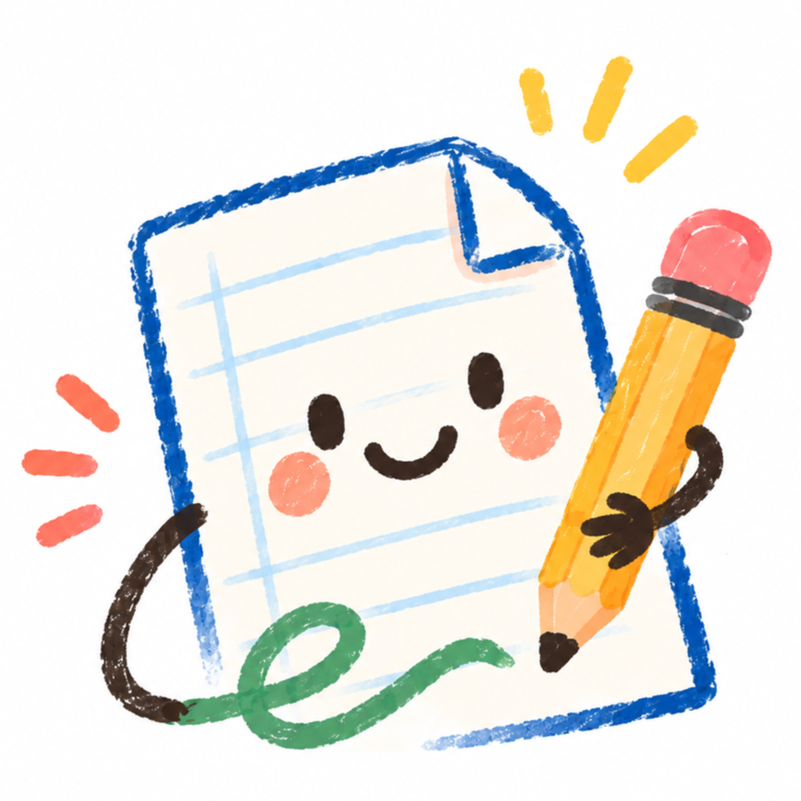
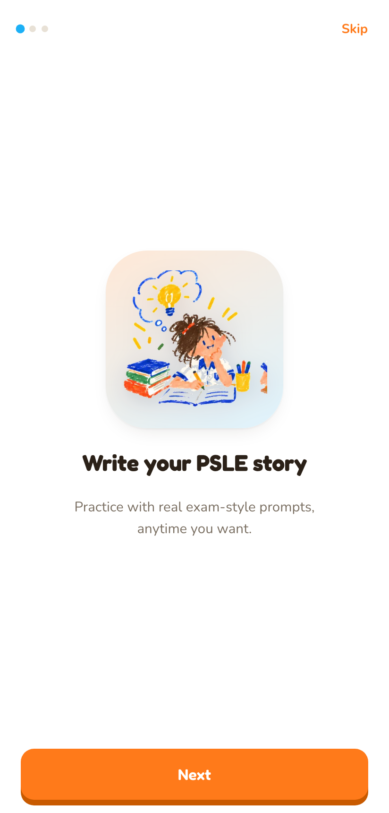
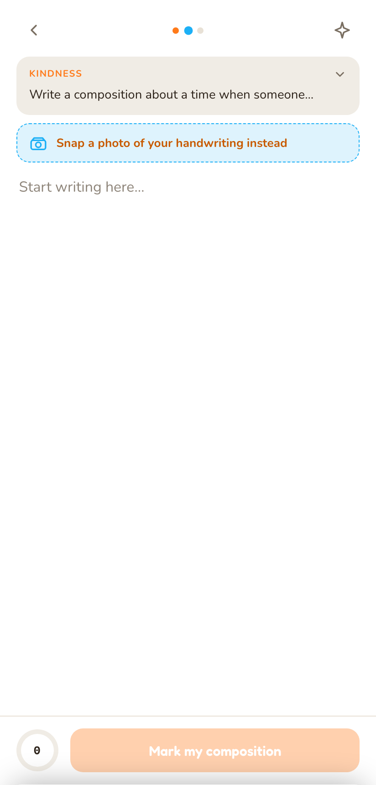
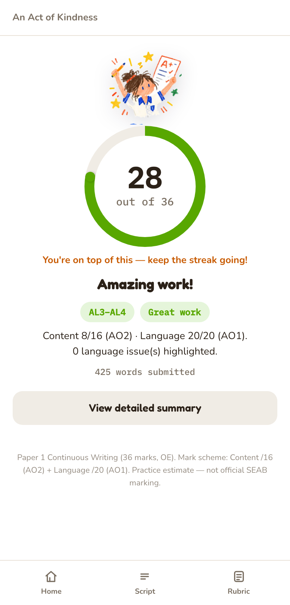

Show the next move
Feedback is useful when a learner can act on it. Every issue points toward a concrete improvement.

Personal project · Learning experience
The tension
Traditional marking can arrive late and collapse many different skills into one score. I wanted to separate spelling, punctuation, word choice and writing technique, so a learner could see both what worked and what to try next.
What I built

Set expectationsA short introduction explains the value before asking for work.

Meet the learner where they areType directly or photograph handwriting, then review extracted text.

Turn results into momentumThe score is framed as a draft, supported by clear priorities.
Product logic
The prototype supports practice questions or a school prompt, typed or photographed work, OCR review, and structured feedback across content, language and writing techniques.
Design principles
Feedback is useful when a learner can act on it. Every issue points toward a concrete improvement.
Warm language and neutral annotation colours separate the work from the child’s confidence.
Pick, write and review stay legible as three small steps—not one intimidating assessment.
UI direction
I reduced the sugar-rush palette into paper, ink and a few functional accents. Orange carries progression, teal marks useful language signals, and the interface gives the student’s writing most of the space.
Next step
The next meaningful layer is progress over time: before-and-after sentences, recurring patterns, and a simple view that lets a parent or teacher discuss improvement without turning the product into surveillance.